Freelance Dashboard
The Complete Client & Project Management Application
- Created: 26 December 2014
- Latest update: 26 December 2014
- By: NextLoop.Net
- email: support@nextloop.net
Please note that Support and Updates are only available to customers who have genuine copies of this software.
INSTALLATION GUIDE
SYSTEM REQUIREMENTS
- Apache Based PHP Server
- PHP 5.3.x
- Mysql Server
- Mod Rewrite Enabled
- .htaccess Enabled
- Cron Jobs (via your hosting control panel)
UNZIP AND UPLOAD FILES VIA FTP
Once you have downloaded your copy of the software, place it on your desktop and unzip the folder. You will now have a directory with a structure shown below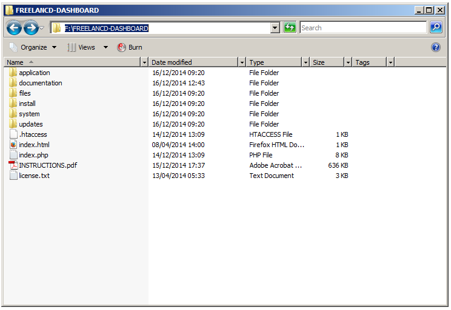
FIG.1
Upload all the files into your website's FTP folder. You can use an FTP client like WS_FTP.
CHMOD FOLDERS & FILES
The following folders must have their permissions changed via FTP (CHMOD).This will make them writeable. Normally you simply right click the specified file/folder on the server side of you FTP Client and you select ‘properties’ you will then have an option to set the permission levels that you want.
If you have set to 777 and you find you are getting 500 SERVER ERROR then you must CHMOD back to 755.
For file, the permission level needed is normally 666
- /updates
- /files
- /files/avatars
- /files/backups
- /files/captcha
- /files/projects
- /files/temp
- /files/tickets
- /application/logs
- /application/cache
- /application/config/database.php
MySQL DATABASE
You will need a MySQL database in order to install the application. You can easily create one via your web hosting providers Control Panel (e.g. Cpanel).When you have finished created your database via your control pane, you should now have the following information:
- DATABASE NAME
- DATABASE USERNAME
- DATABASE PASSWORD
START THE INSTALLATION WIZARD
Open your website to a url similar to the one below. You must replace the words yourdomain.com with your real domain name. Follow all the steps to complete your installation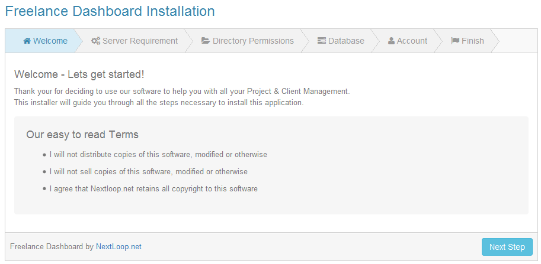
FIG.2
INSTALLING INTO A SUB-FOLDER
To avoid problems, please read these instructions carefully and completely
SUBFOLDER : http://www.yourdomain.com/myclients
SUBDOMAIN: http://myclients.yourdomain.com
If you are installing into a sub-folder e.g. http://www.yourdomain.com/sub folder you must follow all the instructions as above and then edit the .htaccess file that is the main folder of this application.
IMPORTANT (2): If you are installing in a subfolder, DO NOT name the sub-folder 'clients' or 'admin' this will create a conflict with folders of the same name in the application.
OK : http://www.yourdomain.com/account
NOT OK: http://www.yourdomain.com/clients
NOT OK: http://www.yourdomain.com/admin
You will see a section in the .htaccess file, for you to type in your sub folder name.
You then upload this file into your FTP
Your directory structure will look like the image below
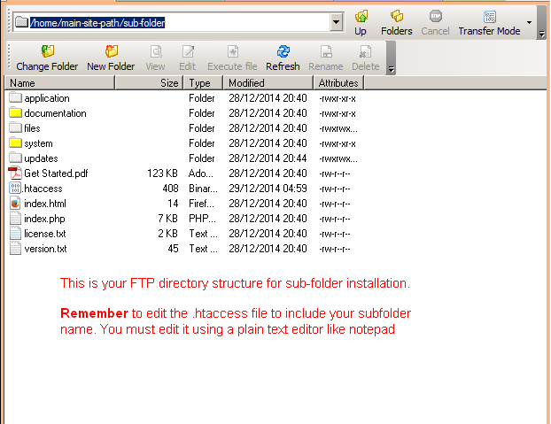
FIG.2.1
LOGIN INTO YOUR DASHBOARD
Once you have completed your installation, you will be able to access the application as follows:- ADMIN PANEL - http://www.yourdomain.com/admin
- CLIENT PANEL - http://www.yourdomain.com/client
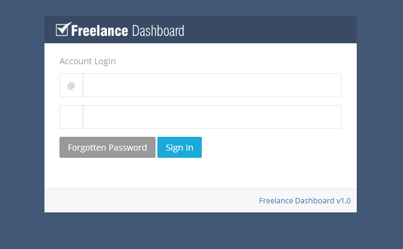
FIG.3
CLIENTS
Clients are normally companies that you do projects for. Even if you client is an individual person, you need to first add them to the dashboard as a 'client/company) Once you have created your client, you will be able to add various users for this client (i.e. people who will have rights to login to the dashboard for this client)
CLIENTS MAIN MENU SECTION
To access this section. click on CLIENTS on the main menu. From the client main menu section you can do the following:- SEARCH clients based on client id, company name or clients email
- ADD new clients, using the 'Add New Clients' button
- VIEW list of clients, showing essential information such as the clients main contact and their telephone number
- DELETE clients. You do this by clicking the delete button
HOW TO ADD A CLIENT
To add a client, click on CLIENTS on the MAIN MENU and then click on the ADD NEW CLIENTS button (as shown below). You will get a new popup window for you to fill in your clients details.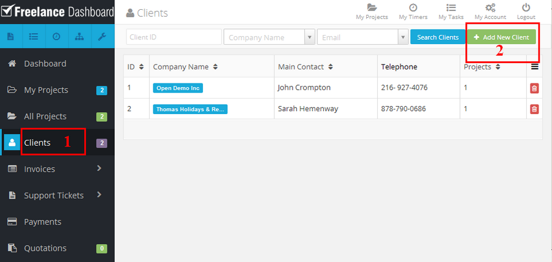
FIG.4
You will be presented with to fill in the clients company details and also the details of the main contact person at the company. The person you specify here will receive an email automatically with their login details. The main contact (primary contact) is also the one who will receive all system generated emails such as invoices, notifications etc.
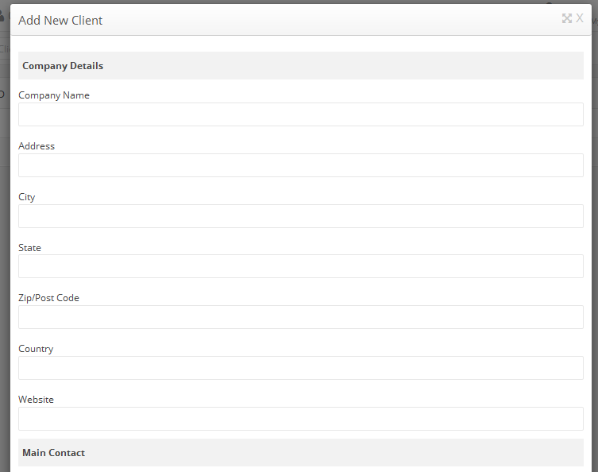
FIG.5
HOW TO DELETE A CLIENT
Do delete a client, you simply click the delete icon () as shown in FIG.4. When you delete a client, all of that clients related data is also deleted. This included Projects, Invoices, Payments, Messages Files etc.CLIENT DASHBOARD
The client dashboard is place where all the details of one client can be viewed (all in one place). You can access this dashboard by clicking on the clients name as show in FIG.4 above.
From the client dash board you can do/access all the items listed below:
- PROJECTS - View all the clients projects, including project progress and due date
- INVOICES - View/Delete clients invoices
- PAYMENTS - View/Delete clients payments
- USERS - View/Add/Edit/Delete client users.
- PROFILE - View/Edit clients main profile details
- SUMMARY ITEMS - A summary of clients Projects, Paid & Due Invoices, Payments made this month & this year
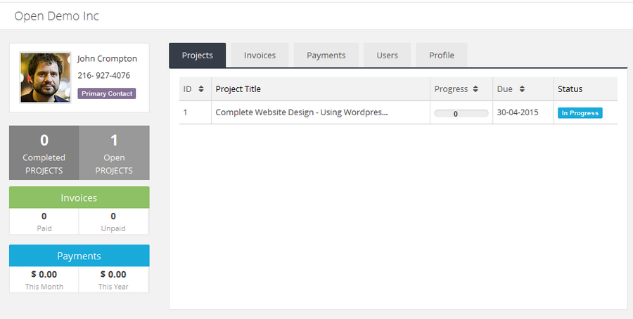
FIG.6
Projects
Projects are the at the heart of this application. Most things revolve around projects.
This means that most items will belong to a particular project. Files, invoices, bugs, tasks, comments etc, all belong to a project.
Before you can do any of these things, you will need to create a project. The system admin has the right to create new projects on behalf of the client.
PROJECTS MENU SECTION
To access this section. click on ALL PROJECTS on the main menu. From the Projects Main Menu section you can do the following:- SEARCH for projects based on project id, project title, clients company name
- ADD new projects, using the 'Add New Project' button
- VIEW list of projects, showing essential information such as the project title, clients name, deadline & project progress
- DELETE projects. You do this by clicking the delete button
- VIEW time spent on a project. This is the total time spent by all team members who are working on the project.
To create a new project, simply click on the ADD NEW PROJECT button as shown below. A form will appear for you to fill in all the project details.
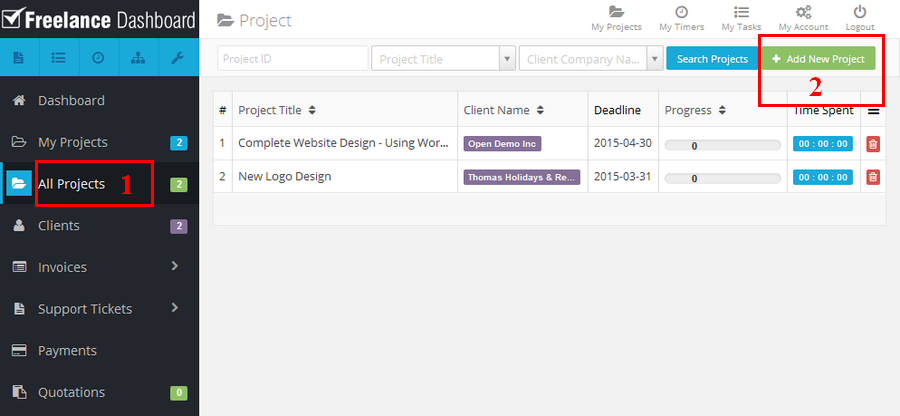
FIG.7
Once you have created/added a new project, your client will automatically receive an instant notification, with details of the new project.
PROJECT DASHBOARD
The project dashboard is place where all the details of one project can be viewed (all in one place). You can access this dashboard by clicking on the project from the list, as show in FIG.7
From the project dash board you can do/access all the items listed below:
- DETAILS - A summary of the project showing, project brief, deadlines, key people
- FILES - View/Add/Edit/Delete project files. You can also comment on project files
- MILESTONE - View/Add/Edit/Delete project milestones. You can learn more about milestones in the sections that follow..
- MY TASKS View/Add/Edit/Delete tasks that are assigned to you for this project
- MESSAGES - View/Add/Edit/Delete general project comments/messages. Clients can also access these messages
- TEAM MESSAGES - View/Add/Edit/Delete team messages. Team messages cannot be viewed by the client
- INVOICES - View/Add/Edit/Delete project invoices
- ALL TASKS -Similar to My Tasks above, but these are for all team members
- PROJECT MEMBERS - View/Add/Edit/Delete project members. This is where you can assigned team members to the project.
- PRJOJECT TIMER. The timer that is shown just below the project menu is YOUR timer. It records the time that you have spent on this project. All team members have access to their own timers. The total time of the project is calculated from all the timers for the particular project. You can also manually edit the project time (incase you forgot to start/stop it the last time etc)
- PROJECT PROGRESS - The project progress is always displayed on the top. The projects progress is calculated from the amount of progress that has been achieved for each project milestone. The progress of each project milestone is also calculated automatically from the number or tasks that have been completed in that milestone. Meaning that, ultimately, the progress of the project is determined by the overall number or tasks that are showing as completed (in their respective milestones)
- EVENTS TIMELINE - This timeline shows all the various actions 'key' actions that have been done on a project. You get a quick glimpse of who has done what on the project. It also helps the client to see what progress is being made on the project and to alert them on important actions that they need to carry out (such as paying a raised invoice)
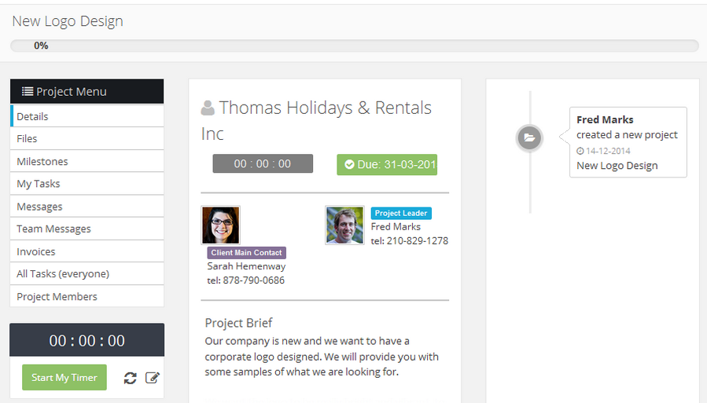
FIG.8
TEAM MEMBERS & GROUPS
If you work in a team, this application allows you to add as many TEAM MEMBERS as you like. Each team member must belong to a particular GROUP. The starting point is to make sure that you have some groups. The system comes with some some default groups (which you can delete and create you own if you want).
Groups are like departments in a company. For software company, the departments could be as an example
- GRAPHIC DESIGNERS
- PHP DEVELOPERS
- FRONTEND DEVELOPERS
- ACCOUNTING
- CUSTOMER SUPPORt
If you work alone you do not really need to have any additional groups, apart from the default group ADMINSTRATORS, which is automatically created when you install the application.
To create a group, simply click on the GROUPS ICON on the TOP ADMIN MENU as shown below
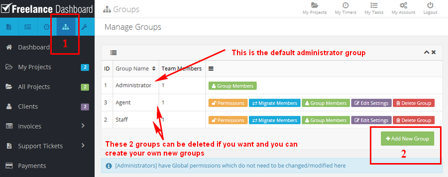
FIG.9
GROUP PERMISSIONS
This application comes advanced permission controls, which allow the ADMINISTRATOR to specify the permissions that GROUPS have across the application's various resources. TEAM MEMBERS get their permission and level of access based on the GROUP that they belong to.
GROUP PERMISSIONS
To change permission levels for a particular group, click on the groups name from the list of groups(see FIG.9) .
you will the be presented with a popup that will allow you to specify the groups permission levels. Permission levels are set on a scale called PERMISSION LEVELS. This scale ranges from 0-4.
The table below show what rights each level grants for each category/section or item in the dashboard.
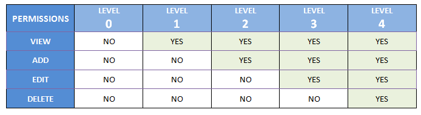
FIG.10
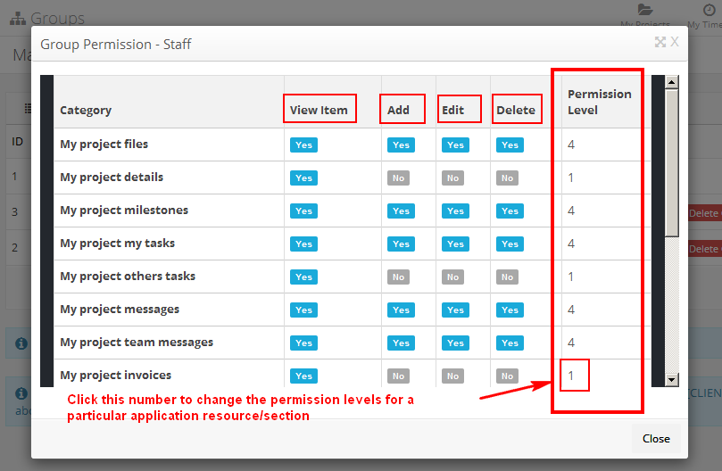
FIG.11
MILESTONES & TASKS
To make managing a project easy, it must be split into smaller segments. A project is first broken its broad segments called MILESTONES. You can think of milestones as goals that you want to reach in a given period of time. Example of these broad goals can be:
- DESIGN CONCEPTS
- FRONTEND DEVELOPMENT
- BACKEND DEVELOPMENT
- TESTING & HANDOVER
Inside these broad segments, you can now create DAY TO DAY - TASKS. This is the actual work items that are needed to complete the MILESTONES.
To create MILESTONES and TASKS, you need to enter the particular PROJECTS
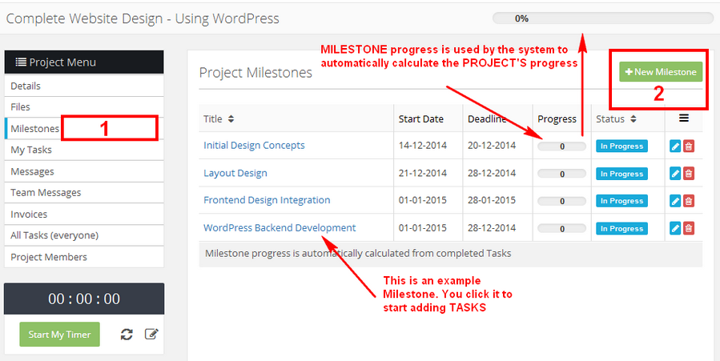
FIG.12
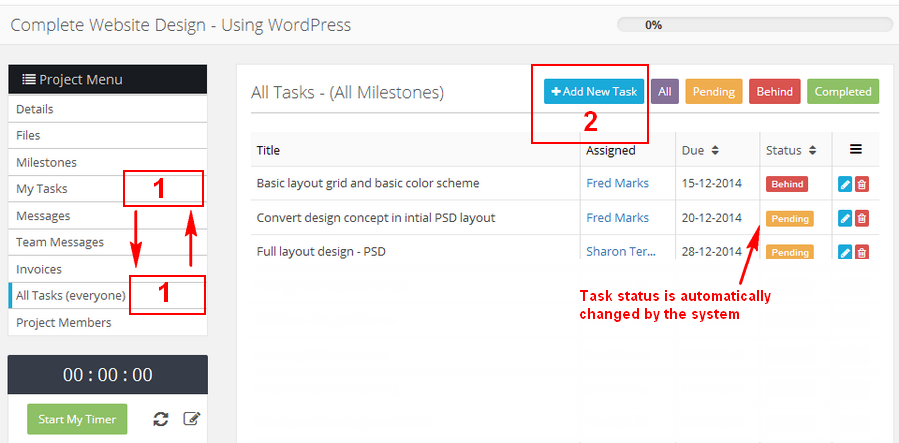
FIG.13
FILES
You can your client can both upload and share files to a particular project. To upload files, please see the image below. Once you have uploaded your files, you can click them view more details.
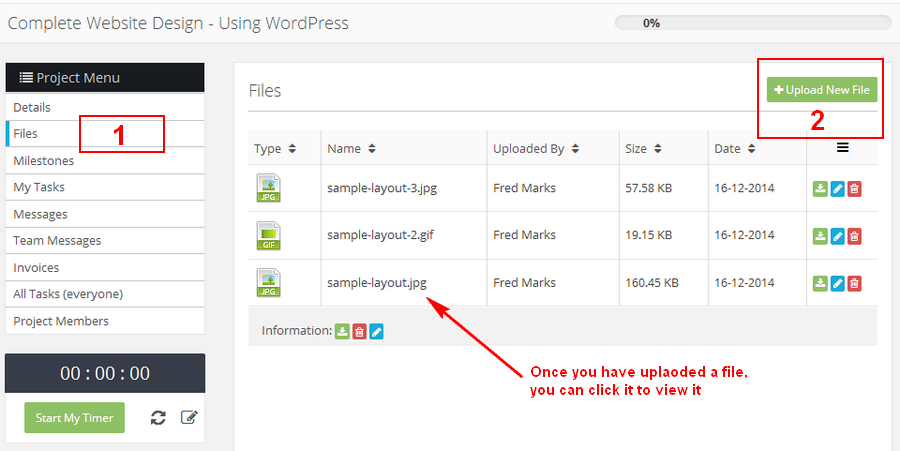
FIG.14

FIG.15
MESSAGING
The application allow you to communicate effectively with your CLIENTS and also you TEAM MEMBERS. You will see the POST A COMMENT button in various areas of the application.
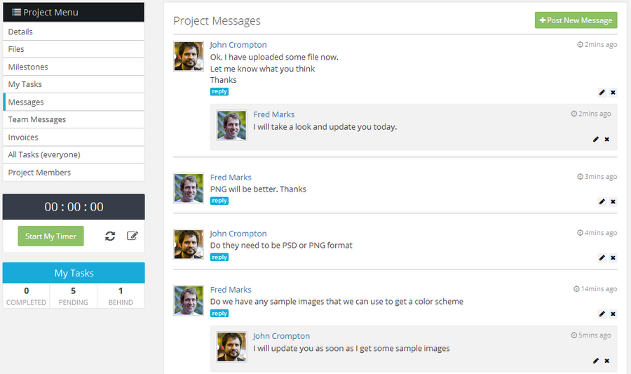
FIG.16
SUPPORT TICKETS
The application comes with a full featured SUPPORT TICKETS section. You and your clients can create and reply to tickets via this section. Tickets can also have file attachments. Please see image below to see how to access the SUPPORT TICKETS feature.
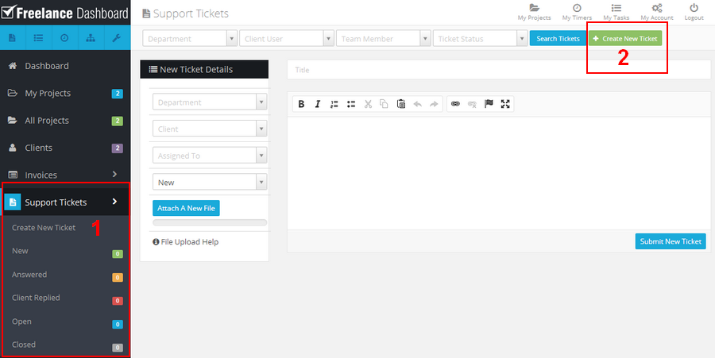
FIG.17
BUGS
The application comes with a BUG TRACKING feature, which allows your clients to report any bugs that they find in your products. To access the BUG TRACKER, click on the BUGS link on the MAIN MENU
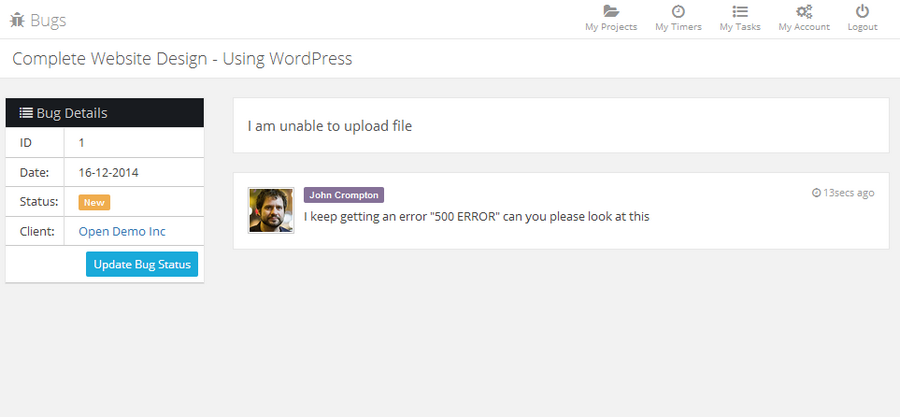
FIG.18
QUOTATIONS
The applications allows you to create forms that your existing clients or potential clients can fill in to request a quotation from you.
Once you clients have filled in the quotation forms, you will be able to price them and let them know how much the work will cost.
We have included a default QUOTATION FORM, but you can create your own forms using the easy to use QUOTATION FORM BUILDER
QUOTATION FORM BUILDER & QUOTATIONS
The system is made of 2 parts, as follows- QUOTATION FORM BUILDER
This is what you use to create your own custom forms. You can access this via the main menu item QUOTATION FORMS - ACTUAL QUOATIONS
These are the forms that have actually been completed by your clients. You access these via the main menu item QUOTATIONS
QUOTATION FORM BUILDER - MAKING YOUR OWN FORM
To create your own quotation form, you click on the QUOTATION FORMS menu and then the CREATE NEW FORM BUTTON (as shown below)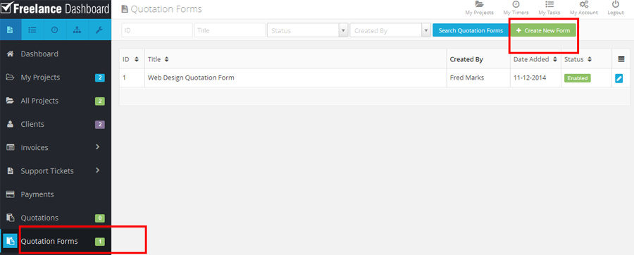
FIG.18.1
You will be presented with the form builder. This is a simple to use tool for dynamically created web forms (Quotation Forms) that you clients can fill in.
Please see the images below for the steps to take to create your form
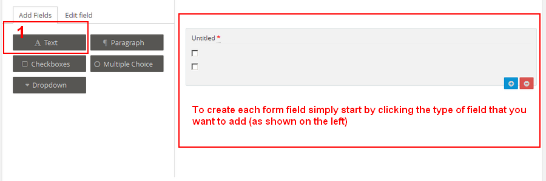
FIG.18.2
NEXT
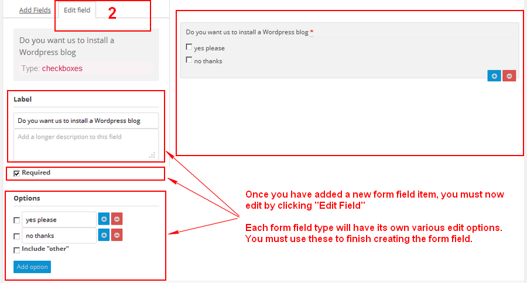
FIG.18.3
HOW DO CLIENTS FILL IN THESE FORMS?
Once you have created your Quotation Forms, then next important thing is to give you clients access to these forms.- DIRECTLY INSIDE CLIENTS DASHBOARD:
Your clients will be able to view and fill in these forms when they are logged into their Dashboard. They will use their main menu item QUOTATIONS
- LINK TO THE FORMS FROM YOUR WEBSITE:
You can also add a link to your main website like "Request a Quotation" and link it to a url like the one shown below
http://your-dashboard-url/common/quotation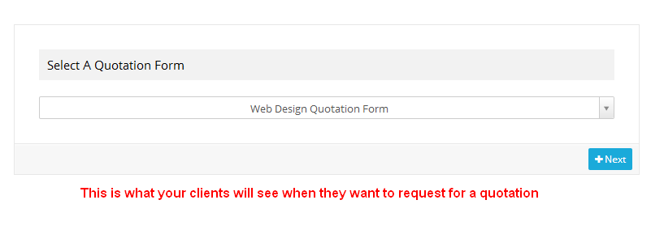
FIG.18.4
SYSTEM SETTINGS
At the heart of this application is the very advanced SETTINGS management section. We have made sure that you will rarely need to manually edit any settings files or config files in order to make system wide changes.
The SETTINGS section has various tabs, which will allow you to configure those aspects of the PRODUCT. We have included some instructions for the various settings sections (within the application)
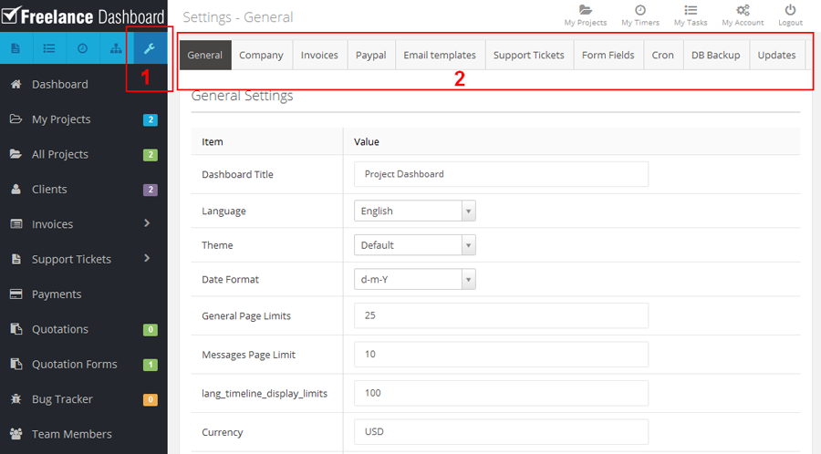
FIG.19
GENERAL SETTINGS
General settings allow you to set the system wide config values. These include- DASHBOARD TITLE - Displayed in the site header
- LANGUAGE - All languages must be stores in the FTP folder /application/language.
- THEME - If you have another theme, it must first be uploaded via FTP into the /applications/themes folder
- DATE FORMAT - Used to display dates. This must be a PHP valid date format (please see php.net website)
- GENERAL PAGE LIMITS - This sets the maximum number of items that are displayed in search results or item listings
- MESSAGES PAGE LIMITS- This sets the maximum number or comments that are displayed on a single page
- TIME LINE DISPLAY LIMITS - This sets the maximum number of events that are displayed in the timeline
- CURRENCY - The international format currency symbol for your default currency. This will also be the same used with your payment gateway.
- CURRENCY SYMBOL- The symbol that is displayed next to amounts
- SHOW INFORMATION TIPS - Displays help tips and information throughout the dashboard. You can disabled this to hide the information
- ALLOW CLIENT REGISTRATION - If enabled, your clients will see a "create an account" button on the login form.
- NOTIFICATIONS - Display Duration (mil i-seconds) - This sets for how long the system messages are displayed (i.e. the little popup messages)
- PRODUCT PURCHASE CODE (license number) - This is the code that you received when you made the purchase. You can view this via your Envato dashboard
COMPANY SETTINGS
This is where you set all your company information (name, telephone, etc)
INVOICE SETTINGS
These settings affect how invoices are paid by your clients
- ALLOW PARTIAL PAYMENTS- Enable this if you want your clients to make partial payments for invoices. This will allow the client to fill in amount they want to pay at a time for each invoice. if disabled, the client will only be allow to make full payments each time.
- EMAIL OVERDUE REMINDER - If enabled, the system will automatically send out a single invoice payment reminder when invoices become overdue
- INVOICE NOTES - Default message that is displayed at the footer of each invoice (such as your payment terms etc)
PAYPAL SETTINGS
These settings are for your paypal payment gateway.
- Gateway Active - Enable/Disable this payment gateway
- Paypal Email Address - Your Paypal email address. Please note that you must have a Business or Premier Paypal account.
- Currency - For consistency, you must ensure that this is the same as your GENERAL SETTINGS currency.
EMAIL TEMPLATES SETTINGS
The system has an easy to use editor for editing all the emails that are sent out by the application. Simply select the template you want to edit and save your changes.
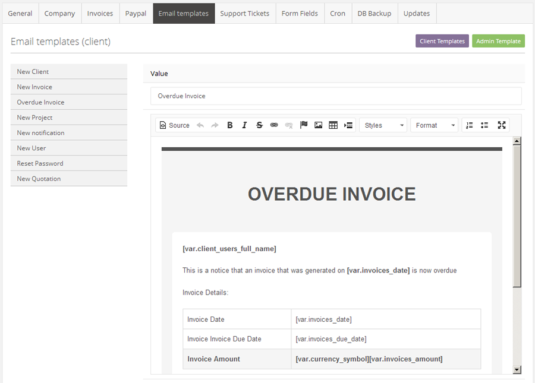
FIG.20
SUPPORT TICKETS SETTINGS
The Support Tickets settings page allows you to do all the following:
- CREATE SUPPORT DEPARTMENTS - You can create as many departments as you need (e.g. Support, Sales, Billing etc)
- MOVE TICKETS - You can also bulk move all tickets from one department to another. This is particularly useful if you want to delete a department
- DELETE DEPARTMENT - You can delete a department using this option
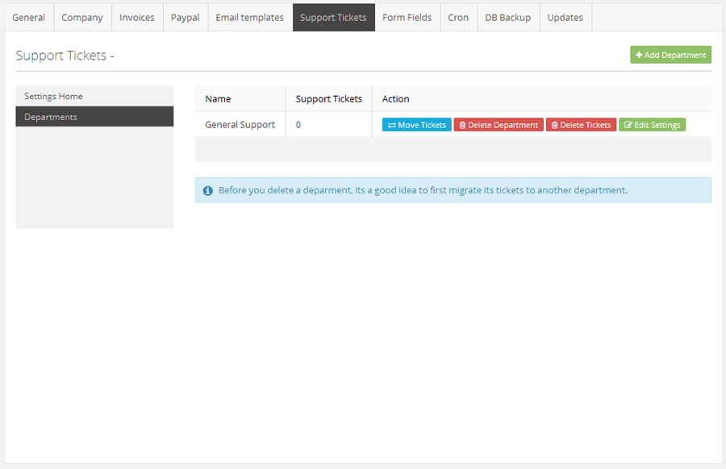
FIG.21
OPTIONAL FORM FIELDS SETTINGS
The application allows you to add additional form fields to the following forms:
- CLIENT REGISTRATION FORM
- NEW PORJECT FORM
This allows you to collect additional information which is not a part of the default forms. Below are just some example of what you could add using this option
- FTP LOGIN DETAILS
- VAT OR TAX INFORMATION
- PROJECT SEPCIFIC QUESTIONS
To enable these optional fields, simply fill out the form.
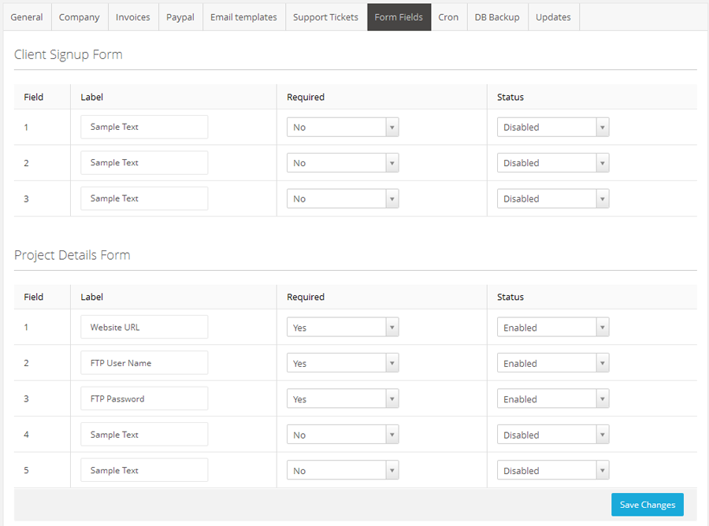
FIG.22
CRON JOBS SETTINGS
Cron Jobs are tasks that are run in the background at set intervals. Cron Jobs are used for example to automatically send invoice reminder messages. In order for the application do this, your web hosting account will need to allow Cron Jobs. You will typically have to copy and paste the link that is provided into your web hosting control panels cron form. Web hosting control panels such as CPANEL / PLESK etc will easily allow you to do this.
The URL that you will need is provided in this section of the settings page.
DATABASE BACKUP SETTINGS
Its vitally important that you always maintain a backup copy of your database. The application provides you with an easy way to download a backup copy of your database.
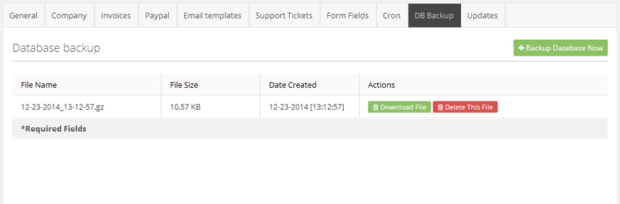
FIG.23
APPLICATION STRUCTURE
This application is built on the CODEIGNITER framework. You can learn more about this FRAMEWORK by visiting http://www.codeigniter.com
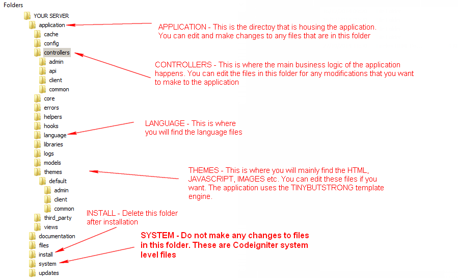
UPDATES
Every now and then we will release updates that either fix bugs or add new functionality. You can view all available updates via the SETTINGS section of the application. Please note that you can only download updates if you have a valid PRODUCT PURCHASE CODE. This is the code that you received when you made your purchase.